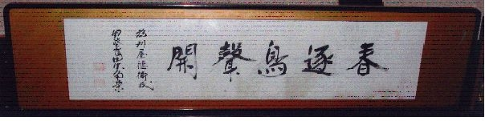

『草鞋をつくる人』 2003年3月号
三波春夫の東京オリンピック音頭に「四年たったらまた会いましょと」というフレーズがあります。四年に一度はオリンピックだけではありません。今年は、同じく四年に一度の統一地方選挙の年です。４月１３日、県議会議員。４月２７日市議会議員・市長。各級選挙の投票日です。もうすぐ、街の隅々まで選挙カーが繰り出し、ウグイス・カラスの大合唱が始まります。日本全国津津浦々選挙運動という大運動会です。運動会は端で見ていると騒々しいだけですが、参加してみると赤勝て白勝てだんだんその気になるものです。玉入れ・綱引きに始まって、最後は騎馬戦・棒倒し。運動会は真面目に参加すると結構疲れるものです。
当社は、商売柄直接選挙運動にはかかわりませんが、地域でお世話になった関係で、南足柄市の市長選、厚木市・平塚市の県議選においてそれぞれ支持推薦をさせていただく候補者がいます。選挙を通じて信頼できる地域のリーダーを応援していく、それも会社の社会的責任の一つです。ご協力をお願いします。
かつて私は、選挙を職業としていました。その体験を書いたり言ったりするのは、いくら公職選挙法で時効になったとはいえ、人間関係に時効はありませんので差し控えます。ただ、秘書時代全国の注目を浴びた空前絶後の選挙戦が、新潟でありましたのでご紹介します。
昭和５８年１２月１８日第３７回総選挙の投票日、新潟は朝から雪でした。新潟第三区で元総理田中角栄は２２万票という史上最高得票をあげます。実に全投票者数の４６．６％。つまり、定数五名の中選挙区で他の４名以上の候補者は蹴散らされて、投票者の二人に一人が田中角栄と名前を書いたのです。しかも２割の４万票しか取れなかった対立候補は、現職の大蔵大臣や野党第一党の副委員長という大物たちです。その２ヶ月前の１０月、ロッキード事件丸紅ルートの判決で有罪とされたのにもかかわらずです。
判決に先立つ７年前。昭和５１年１２月のいわゆるロッキード選挙で元総理は、疑獄の逆風の中自らの希望で三区内を徹底的に辻説法をして廻り、一日１５０キロから２００キロ移動し、５０ヶ所で演説を行いました。投票日前日まで全行程は２６００キロ、辻説法は５００回に及ぶ。１２月５日投票日。その日もみぞれの降る寒い朝、１７万票を取り復権への足がかりとします。その後、５４年１０月の総選挙で１４万票。５５年の６月の衆参同日選挙で、同じく１４万票。そして、５８年１２月伝説の２２万票。田中角栄は、雪の選挙は驚くほど強いのです。
田中角栄後援会の名称は越山会といいます。かつては、公称１０万人の会員を誇っていました。越山の名前の由来は、戦国越後の雄・上杉謙信が能登七尾攻めの時詠んだとされる「月澄めばなお静かなり秋の海」の発句に続き、綴られた四韻一律「霜は軍営に満ちて秋気清し・・・」で始まる七言絶句＜九月十三夜＞の一節から引用されました。
越山会の幹部に配られた選挙の感謝状を見たことがあります。普通政治家の後援会の感謝状ならば、田中角栄後援会の名前で出すのですが、そこが違います。政治結社・越山会という何とも勇ましい名前で表彰し、そこには角栄の名前はありません。疑獄の逆風で票を伸ばし、有罪判決の危機の中で極限まで組織を強くし票を拡大する。後援会は、選挙を戦うための組織です。よいわるいではなく、ただ強いか弱いかだけなのです。越山会ほどの組織はこの時代の前にも後にも比類するものはなくまさに史上最強の政治後援会だったのです。
越山会の強さの秘密は何だったのだろう。もちろん、田中角栄の人間的魅力が一番だと思いますがもう一つ、地元の選挙責任者の本間幸一秘書はかねてからいっていました。「越山会はピラミッド型の上意下達型の組織ではない。円のような組織で、田中角栄も円の中に入っている一人にすぎない。会員なのだ。要するに同士なのだ。雪の克服を田中に託す気持ちの繋がりが彼を押し上げているのだ。」
駕籠に乗る人、かつぐ人、そのまた草鞋（わらじ）をつくる人。
闇将軍といわれ、キングメーカーとして君臨していた頃、よく人寄せパンダと自称し請われるままに政治家のパーティーや選挙の応援演説に行ったときよくでた角栄節の一つです。日本の大衆はつい半世紀前までほとんど農民でした。民衆は村社会という土着の生活様式で生きてきました。風俗、習慣、きまり、義理、人情という論理や感情の無数のヒダのなかで、助け合い役割を分担して共同体を維持してきたのです。その本質を見事なほど彼は知り抜いていたからこそ、越山会は結束し、さらに永田町という巨大な村社会で一頭群を抜いたのだと思います。
貴種名門でもなく学閥・官閥の背景のまったくない人間が、戦中戦後の混乱のなかを、幸運の神の前髪をつかみ続けて開運の階段を駈け上がりついに宰相までのぼりつめる。自叙伝を読むと奇跡ともいえる人との出会いと、いたずらのような運命のめぐりあわせが彼をそこまで押し上げたのです。それもこれも人のために汗をかくという村の掟を守り続けた結果なのかもしれません。
「わが国の前途に思いをめぐらす時、私は一夜、沛然（はいぜん）として大地を打つ豪雨に心耳をすます思いであります。」昭和４９年
の総理辞意決意分の一節です。金脈問題で野党に揺さぶられ、これ以上の続投に娘の真紀子が大反対したのが、おもいのほかあっさりと退陣した真相のようです。英傑も娘にはかないません。平成５年１２月１６日逝去。この日も越後は雪でした。棺を覆いて１０年。事いまだ定まらずです。
私たちの会社も小さなムラのようなものです。助け合い役割を果たして、さらに少しでも自分の事以外の事でも汗をかいてみる。やってみましょう。

昭和32年7月5日 郵政大臣就任時（田中角栄：当時39歳）直筆の書。
新潟県南蒲原郡下田村に私の父の実家にあったものです。
株式会社 新清
代表取締役 刈屋 隆